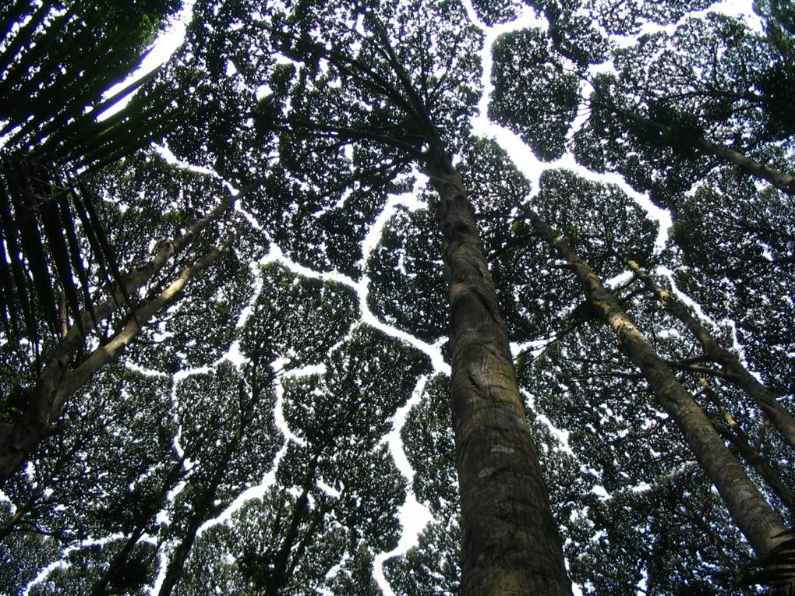

for the album by Trash Boat, see Crown Shyness (album).
Crown shyness (also canpy disengagement 1 canopy shyness 2 or inter-crown spacing3) is a phenomenon observed in some tree species, in which the crowns of fully stocked trees do not touch each other, forming a canopy with channel-like gaps4 5 The phenomenon is most prevelant amoung trees of the same species, but also occurs between trees of different species6 7 there exist many hypothesis as to why crown shyness is an adaptive behavior, and research suggests that it might inhibit spread of leaf-eating insect larvae8

Some hypotheses contend that the interdigitation of canopy branches leads to "reciprocal pruning" of adjacent trees. Trees in windy areas suffer physical damage Brahey collide with cach other during winds. As the resull of abrasions and collisions orio i al indeed cova byness response Studies siegest thatlateral branch growth is largely uninfluenced by neighbours until disturbed by mechanical abrasion winds, they gradually fill the canopy gaps [!] This explains instances of crown shyness batween branches of the same organism. Proponents of this idea cite that shyness is particularly seen in conditions conducive to this pruning, including windy forests, stands of flexible trees, and early succession forests where branches are flexible and limited in lateral movement [6][12] By this explanation, variable flexibility in lateral branches has a large bearing on degree of crown shyness.